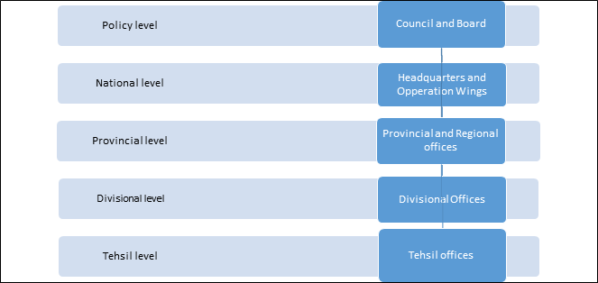
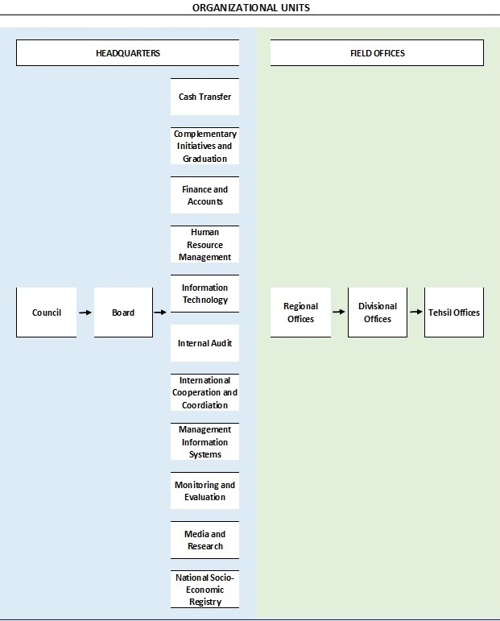

2 Governance Structure of BISP
Established through an Act of Parliament, BISP works under the patronage of the Prime Minister of Pakistan being the Executive Patron and the President of Pakistan acting as the Chief Patron of the programme. The Benazir Income Support Programme Act 2010 promulgated in August 2010 provides for establishment of BISP and lays down its main objectives. Section 4 of the Act defines the following three main goals of the Programme:
enhance financial capacity of poor people and their dependent family members;
formulate and implement comprehensive policies and targeted programmes for the uplift of underprivileged and vulnerable people; and
reduce poverty and promote equitable distribution of wealth especially for the low income groups.
Eradication of poverty and elevating the status of marginalized and under privileged sections of society, especially women, through establishment of comprehensive Social Protection Net
BISP is dedicated to fight poverty by employing multiple social protection instruments designed to bring a sustainable positive change in the lives of persistently excluded and deprived families
2.1 Council
The governance structure of the Programme is laid down in Sections 5-9 of the BISP Act. The Government of Pakistan is represented at BISP through the Council, as stipulated in Section 8 of the BISP Act. The Council is the highest authority at BISP. The President of Pakistan is the Chief Patron, and the Prime Minister is the Executive Patron of the Council. Members of the Council are appointed by the Chief Patron on advice of the Executive Patron, and are highly reputable, distinguished, and well accomplished national and international individuals. The Chairperson BISP serves as an ex officio member of the Council, which is required to meet at least once in a year. The Council has the following powers and functions, as defined under Section 9 of the Act:
To mobilize financial resources for the Programme, specifically for the Safety Net Programme;
To advise BISP Board on the following matters:
Policies on poverty reduction;
Enhancement of the Programme;
Reaching out to the donors through the Chairperson of the Programme; and
Affairs of the Board and performance of its functions.
2.2 Board
The BISP Board is the highest body in charge of policy development and strategy formulation with regard to BISP and its various initiatives. BISP Act 2010 provides for a Board comprising of 9 to 11 members. The members belong to representatives from the government, non-governmental organizations, and are technical experts. Chairperson BISP is appointed by the Chief Patron on the advice of the Executive Patron and heads the Board. Secretary BISP is an ex officio Member is Secretary of the Board and also serves as Principal Accounting Officer.
The powers and functions of BISP Board as laid down under Section 6 of the Act are:
To approve budget of the Programme prepared by BISP management;
To take decisions on the financial aspects of the Programme submitted by the management;
To monitor the Programme in a transparent manner;
To make regulations, and approve policies and manuals;
To approve eligibility criteria for financial assistance under the Programme; and
To present annual progress reports to the Council and consider its recommendations.
Whenever appropriate, the Board will delegate its authority to the respective BISP wing responsible for addressing the concern, or to a specifically assigned representative or staff member. The major executive functions relating to the Programme have been vested in the position of Chairperson of BISP. In this regard, Section 7 of the BISP Act 2010 lays out the following powers and functions of the Chairperson:
The Chairperson of the Board shall be the Chairperson of the Programme;
The Chairperson shall be in-charge ensuring consistency of operation with policies of the Programme approved by the Board.
The Chairperson shall provide strategic guidance to the Progarmme and ensure implementation of the Programme in accordance with the decisions of the Board and provisions of this Act.
The Chairperson shall in consideration of the advice of the Council execute the Board decisions for enhancement of the Programme.
The Chairperson shall be responsible for meeting all objectives and policies of Programme and implementation thereof.
The Chairperson shall have the power to enter into any agreement, contract, understanding with any international organization or institution or donor agency or counter-part entity, on the advice of the Council and approval of the Board.
The Chairperson shall assist the Council in publicizing the Programme as well as raising funds. The Secretary BISP is the head of the management and is responsible for overseeing the day-to-day operations of the organizations. Section 10 of the Act specifies the roles and responsibilities of the management, which include:
To execute the policies and plans approved by the Board
To adopt modern and effective processing and distribution mechanism without any intermediaries so that the financial assistance or funds are provided to eligible persons and families.
To identify eligible persons or families for financial assistance or other benefits
To determine terms and conditions of the employees and grant additional allowances or any other incentives to them by making regulations to that effect.
To take appropriate measures for effective administration, monitoring and evaluation of the Programme.
To engage any person or entity on contract basis to carry out assignments or for the consultancy in accordance with the regulations;
To establish administrative structure at the filed level for the efficient implementation and accessibility of the Programme;
To implement mechanisms and processes that facilitate the removal of grievances and complaints related to the Programme’s operations as provided in the regulations, and
Submit quarterly progress reports to the Board on the financial and operational aspects of the Programme.
2.2.1 Government Members
Chairperson, BISP /Chairperson, BISP Board (Ex-Officio Member)
Secretary, BISP (Ex-Officio Member)/Secretary of the Board
Secretary, Ministry of Poverty Alleviation and Social Safety (Ex-Officio Member)
Chairman, National Database and Registration Authority (NADRA) (Ex-Officio Member)
Secretary/Additional Secretary, Finance Division (Ex-Officio Member)
Secretary/Additional Secretary, Economic Affairs Division - (Ex-Officio Member)
2.2.2 Private Members
Dr. Kaiser Bengali
Dr. Ashfaque Hasan Khan
Mr. Haris Gazdar
Dr. Osman Hasan
Ms. Sania Riffat
2.3 Organizational Structure
In order to implement its cash transfer programs across the country, BISP has over the years built up its structure of provincial/ regional office as well as tehsil offices throughout the country. Presently, BISP operates nationwide through a network of 385 tehsil offices, 33 divisional offices, six regional offices, and its headquarters in Islamabad. This structure facilitates programme implementation at the national, provincial, divisional, and local level.
The regional offices in the provinces are headed by Director Generals, and regional offices of Azad Jammu and Kashmir and Gilgit-Baltistan are headed by Regional Directors. All Director Generals and Regional Directors administratively report to the Secretary BISP who heads the management. At the grass roots level, the BISP tehsil offices are headed by an Assistant Director. There are five implementation levels in order of hierarchy:

